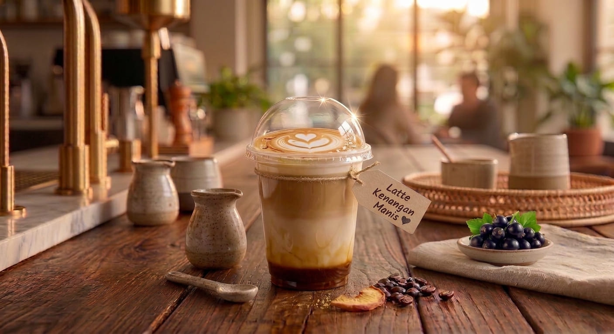

Produk Unggulan

1. Kopi Tubruk Signature
Rp18.000Kopi hitam pekat dengan aroma khas untuk menemani pagi atau malam saat sedang banyak pikiran.

2. Cold Brew Aren
Rp24.000Kopi cold brew yang ringan dan segar dengan perpaduan manis gula aren, cocok diminum siang hari.

3. Americano Peach
Rp19.000Perpaduan espresso dan rasa peach yang segar, cocok untuk Anda yang ingin kopi dengan sensasi buah.

4. Americano Blackcurrant
Rp29.000Americano dengan cita rasa blackcurrant yang manis, sedikit asam, dan menyegarkan.

5. V60
Rp16.000Kopi manual brew dengan karakter rasa yang lebih bersih dan aroma biji kopi yang lebih menonjol.

6. Es Kopi Kenangan Galau
Rp22.000Perpaduan espresso, susu creamy, dan gula aren dengan rasa manis yang pas untuk menemani waktu santai.

7. Latte Kenangan Manis
Rp23.000Perpaduan espresso dan susu creamy dengan sentuhan karamel manis, cocok menemani sore yang santai.